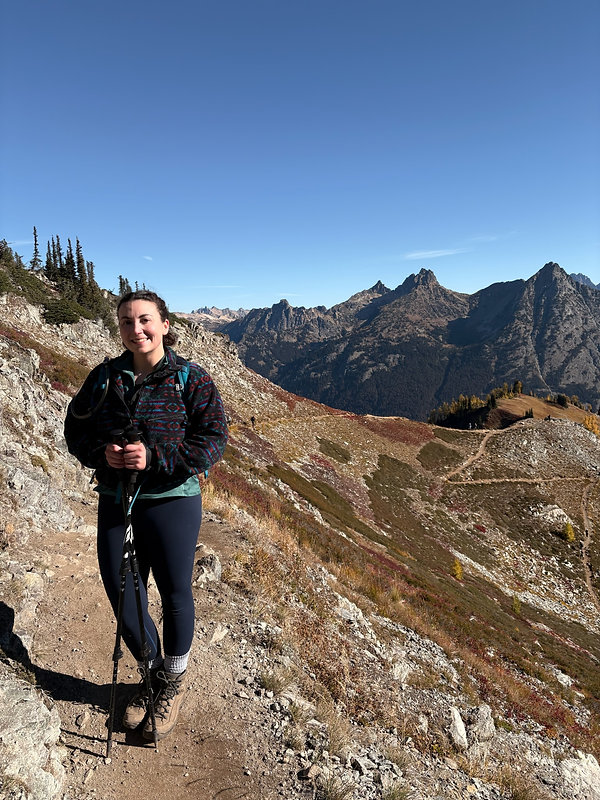

Meet Dani
Dani Ladyka, MS, RDN, CD
she/her
Registered Dietitian, Co-OwnerDani is a registered dietitian specializing in the treatment of eating disorders, disordered eating, and chronic dieting, while also providing individualized nutrition counseling for a wide range of health and wellness goals.
As an eating disorder dietitian, Dani has experience working with adults and adolescents across the outpatient, intensive outpatient, partial hospitalization, and residential levels of care.
She works successfully as a member of multidisciplinary care teams that involve therapists, medical doctors, and psychiatrists to support people in their recovery journeys.
Dani practices from a weight inclusive, non-diet approach, believing that health and well-being are achievable at every size.
Orienting from a lens of curiosity, Dani enjoys exploring how each individual relates to food, movement, and body, as well as helping people develop attunement in these aspects of their life.
She focuses on creating collaborative and supportive relationships with her clients, striving to meet each person where they are with compassion and empathy.
When not working, you can find Dani reading fantasy books, playing video and board games, going on neighborhood walks, hiking, and teaching indoor cycling classes.

Contact us today to schedule a FREE introductory call.
Contact Us